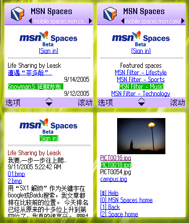

#import "Leask.h"
MSN Space any Time! any Where!
9/14/2005 7:59:42 PM
今天试用了
MSN Spaces的Mobile Edition
，感觉还好。
终于可以随时随地用手机关注MSN Spaces了 。
我用SX1自带的浏览器，NetFront(S60)和Opera(S60)都成功访问过，觉得用NetFront效果和速度都比较理想。

Comments